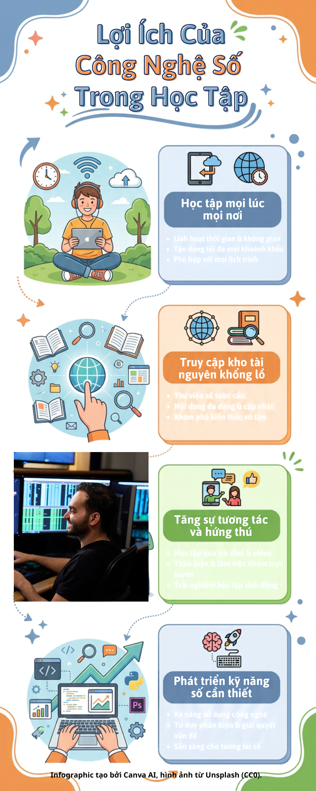

Video 1
Nội dung video được trình bày trong Nhiệm vụ 2.2.
Tổng hợp nội dung trực quan cùng các video YouTube đã giới thiệu ở Nhiệm vụ 2.2, giúp việc học tập trở nên sinh động và dễ ghi nhớ hơn.

Nội dung video được trình bày trong Nhiệm vụ 2.2.
Video tham khảo bổ sung cho chủ đề infographic.